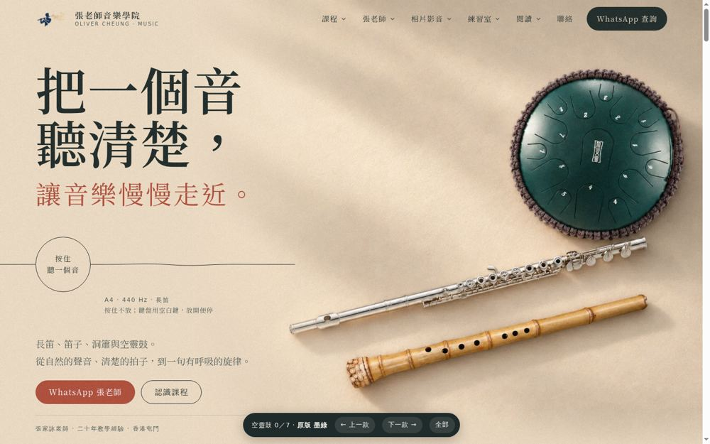
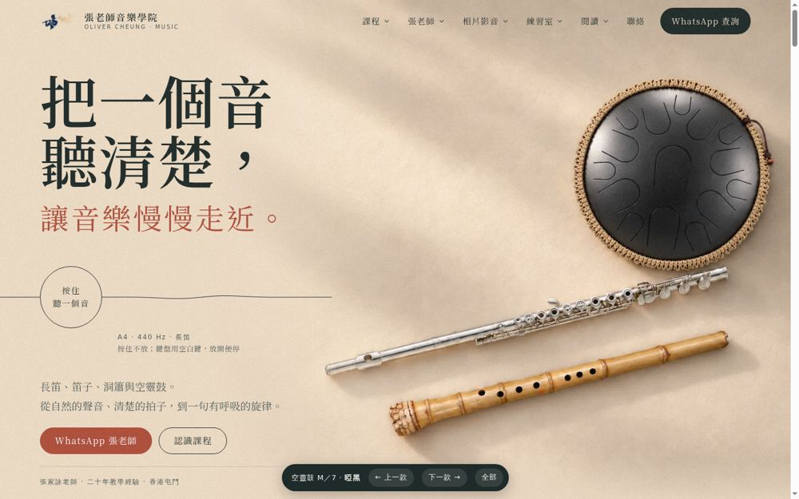
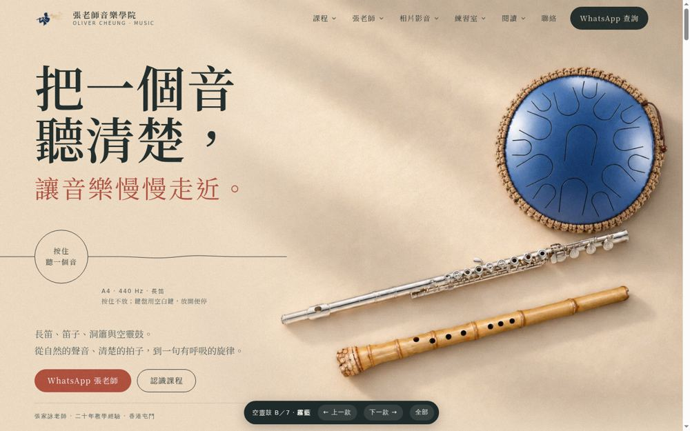
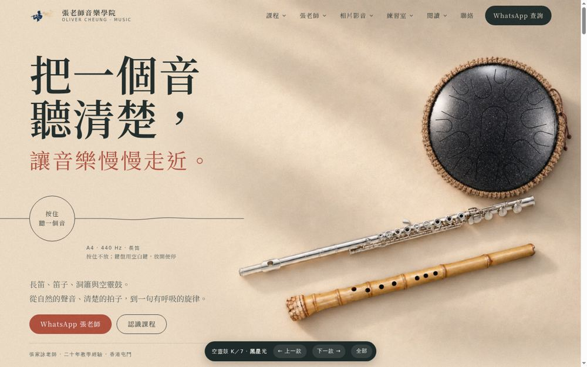
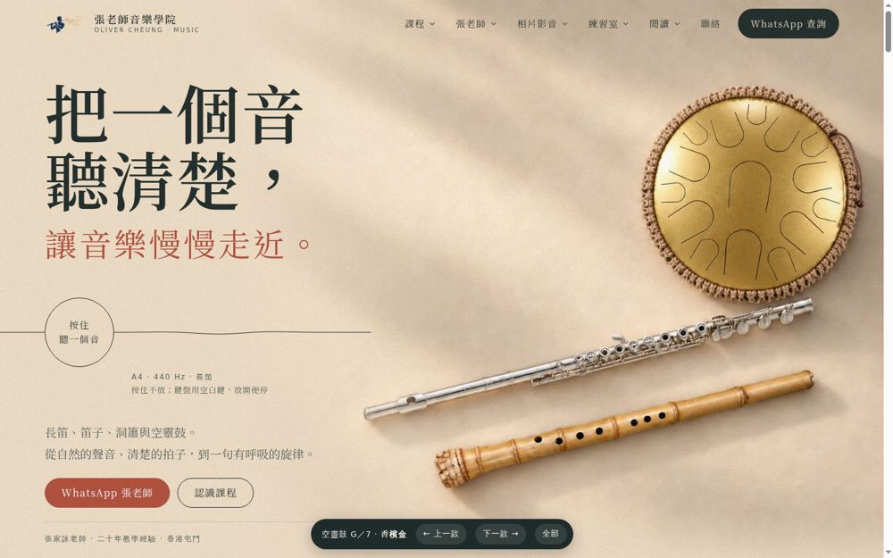
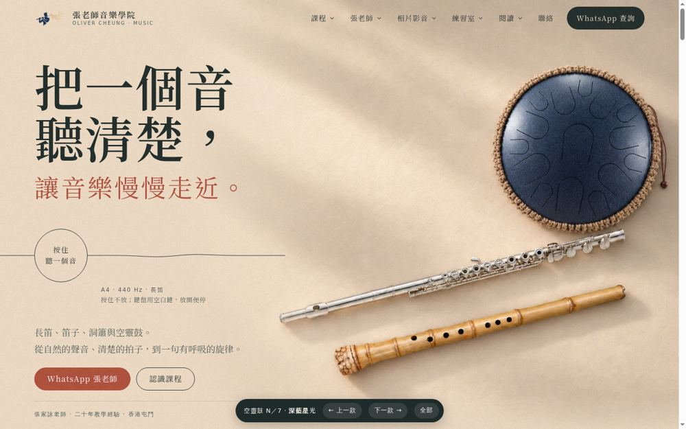
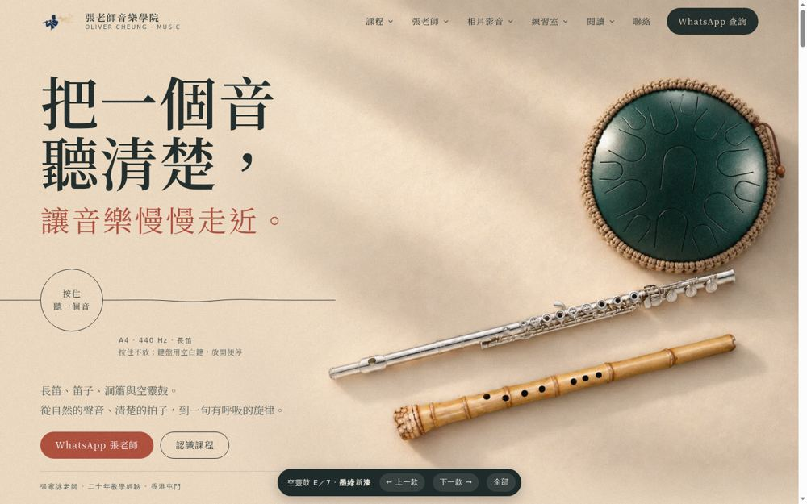

只換空靈鼓，長笛、南簫、背景、光線不變；顏色取自 HLURU 官方真實色款。每款都是完整首頁，點入去可捲動、按住聽音，底部按鈕可前後切換。

對照：現時 01 的鼓，平光、灰繩、數字糊。

石墨黑啞光漆，弧面有一道柔和反光，麻色繩邊。

灰藍金屬漆，冷色鼓配暖色紙，和銀長笛同一色溫。

黑漆帶細銀閃粉，近看有星光。

暖金金屬漆，和黃竹簫、象牙紙同一暖色系。

深海軍藍帶細閃粉。

保留墨綠，改成真實金屬漆面和麻色繩。